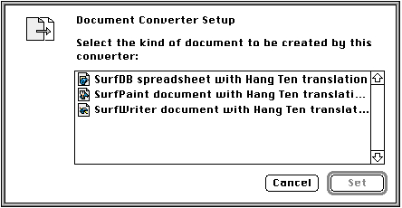

Legacy Document
Important: The information in this document is obsolete and should not be used for new development.
Important: The information in this document is obsolete and should not be used for new development.


Translating Documents on the Desktop
Macintosh Easy Open includes a tool, called Document Converter, that allows users to convert documents without opening them. This tool is useful if a user wants to convert a number of documents (batch translation) or wants to give the translated documents to other users who don't have either Macintosh Easy Open or the appropriate translation extensions installed on their machines.To translate documents on the desktop, the user needs to configure the Document Converter tool. When the user opens the Document Converter, it displays the dialog box shown in Figure 7-7.
Figure 7-7 Document Converter configuration dialog box
 This dialog box lists target document types, not applications. The user selects a target document type and clicks the Set button to complete the configuration. At that point, the Document Converter application quits and changes its own name to reflect the conversion path of documents subsequently dropped onto it.
Once the Document Converter has been configured, the user can translate documents by dropping them onto the Document Converter icon. The Document Converter creates a new document in the target format and leaves the original document unmodified. The user can also drop a group of documents--or even a folder of documents--onto the Document Converter icon; in these cases, the Document Convertor translates all the documents in the group.